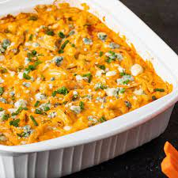

Buffalo Chicken Dip

Description
This is the recipe to my significant other's amazing buffalo chicken dip. Although it is a relatively simple to follow and easy recipe, it will leave everyone satisfied. Below is a list of ingredients and steps to follow in order to make this amazing dish.
Ingredients:
- 1 cup Shredded Chicken
- 1/2 cup Buffalo Sauce
- 1 Bag of Shredded Cheese
- 1 8 oz. Block of Cream Cheese
- 1/4 cup of Ranch
- Seasonings to taste
Steps:
- Combine all ingredients together in a mixing bowl and add to the slow cooker.
- Cook on low for 2-3 Hours
- While it is cooking, use this time to cut up assorted vegetables, etc. for dipping.
- Enjoy!